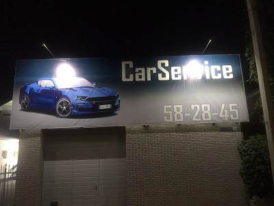
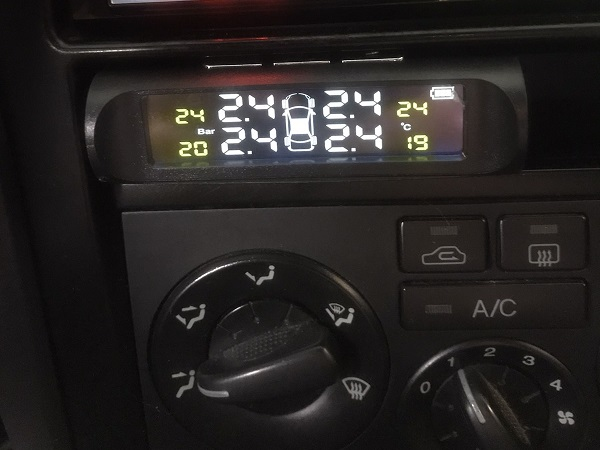

Ремонт автомобилей и установка дополнительного оборудования в Саратове

CARS64 - это не только автосервис. Если 5 лет назад наша компания оказывала исключительно услуги по ремонту
автомобилей, то сегодня — это целый комплекс сервисов для клиента. Где бы вы ни были, и что бы с вами не
случилось — CARS64.RU всегда рядом.
Преимущества нашего автосервиса:
- В нашем сервисе Вы получите весь спектр услуг по ремонту автомобилей в одном месте от мелкого ремонта до
установки дополнительного оборудования.
- Для вашего удобства помимо ремонта в нашем сервисном центре возможен заказ запчастей и пока
Ваш автомобиль находится на подъёмнике, наши поставщики доставят запчасть в день ремонта и мы
установим их оперативно, экономя Ваше время
- Наш сервис работаем со всеми марками автомобилей, мы ремонтируем любые автомобили иностранного производства,
наши отечественные автомобили, а также коммерческую технику.
- У нас нет очередей, мы можем принять Ваш автомобиль как в день обращения, так и по записи. Запись возможна по
телефону и на нашем сайте в разделе контакты.
- У нашего сервиса удобное месторасположение в микрорайоне Солнечный, мы находимся на первой линии,
также очень удобная транспортная развязка.
Услуги и цены:

Ремонт подвески
| Виды работ: |
Иномарки |
Отечественные |
Коммерческие |
| Замена передних амортизаторов | 700-3000 | 500 | 700-3000 |
| Замена втулки стабилизатора | 350-1500 | 300 | 350-1500 |
| Замена стабилизатора | 800-2500 | 300-1000 | 800-2500 |
| Замена стоек стабилизатора | 350-1000 | 300 | 350-1000 |

Техническое обслуживание
| Виды работ: |
Иномарки |
Отечественные |
Коммерческие |
| Замена воздушного фильтра | 100 | 100 | 100 |
| Замена масла в двигателе | 300-400 | 300-400 | 300-400 |
| Промывка двигателя и замена масла | 400-500 | 400-500 | 400-500 |
| Замена масла в КПП | 300 | 300 | 300 |
| Замена топливного фильтра | 300-1500 | 200 | 300-1500 |
| Замена масла в мосту | 300-1500 | 200 | 300-1500 |
| Замена салонного фильтра | 200-800 | 100-500 | 200-800 |
| Замена охлаждающей жидкости | 800-1500 | 500-1200 | 800-1500 |
| Замена тормозной жидкости | 600-1200 | 600 | 600-1200 |
| Прокачка тормозной системы | 500 | 400 | 500 |
| Замена свечей зажигания | 400 | 200-600 | 400 |
| Замена передних тормозных колодок | 600-1500 | 300 | 600-1500 |
| Замена задних тормозных колодок | 800-1500 | 600 | 800-1500 |
| Замена сцепления | 3000 | 1800 | 3000 |
| Замена ремня ГРМ | 2000 | 600 | 2000 |
| Диагностика ходовой | 200 | 200 | 200 |
| Диагностика электронных систем | 700 | 500 | 700 |

Ремонт двигателя
| Виды работ: |
Иномарки |
Отечественные |
Коммерческие |
| Капитальный ремонт | 20000 | 20000 | 20000 |
| Регулировка клапанов | 1500-5000 | 800 | 1500-5000 |
| Замена цепи | 2500-25000 | 1200 | 2500-25000 |
| Замена головки блока цилиндров | 3000-10000 | 3000 | 3000-10000 |
| Замена прокладки головки блока | 5000 | 3000 | 5000 |

Топливная система
| Виды работ: |
Иномарки |
Отечественные |
Коммерческие |
| Замена бензобака | 2000-8000 | 600-3000 | 2000-8000 |
| Замена топливного насоса | 1000-3500 | 800-2000 | 1000-3500 |
| Замена топливного датчика | 500-2500 | 350-2000 | 500-2500 |
| Очистка топливной системы | 500-3000 | 500-1500 | 500-3000 |
Дополнительное оборудование:

Установка сигнализации
| Виды работ: |
Иномарки |
Отечественные |
Коммерческие |
| С обратной связью | 1000 | 500 | 2000 |
| С автозапуском | 1000 | 500 | 2000 |
| С GSM модулем | 1000 | 500 | 2000 |

Установка датчиков давления в шины
| Виды работ: |
Иномарки |
Отечественные |
Коммерческие |
| на 4 колеса | 1000 | 500 | 2000 |
О нас
Наша компания больше 10 лет занимается конструированием и производством высококачественных усиленных теплиц под
торговой маркой «Кремлевские». Благодаря мощному каркасу и строгим внутренним требованиям ОТК, продукция нашего
завода пользуется спросом не только дачников-любителей, но и владельцев крупных агропромышленных комплексов.
Предприятие «Новые Формы» было основано в 2007 году на производственных мощностях строительной корпорации
«СтройСистемСервис». Уже в 2009 году открывается отдельное производство в городе Кимры Тверской области.
За это время наши инженеры-конструкторы разработали и внедрили в жизнь разнообразные формы несущего каркаса,
применили многие конструктивные элементы, облегчающие труд дачника в теплице, занимались проектированием тепличных
комплексов и оранжерей. Наши теплицы широко известны не только на территории России, но также и за рубежом.

 +7 (8452) 582845
+7 (8452) 582845 admin@cars64.ru
admin@cars64.ru


 +7 (8452) 58-28-45
Электронная почта:
+7 (8452) 58-28-45
Электронная почта:  admin@cars64.ru
Адрес:
г. Саратов, ул. Перспекивная д. 36
admin@cars64.ru
Адрес:
г. Саратов, ул. Перспекивная д. 36